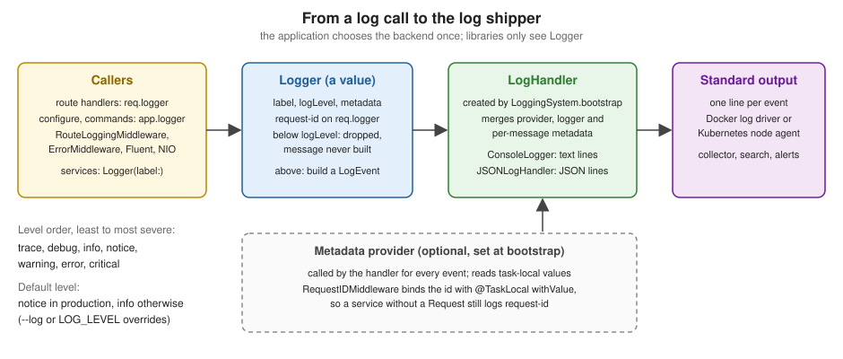

Logging
|
This content was generated with the assistance of AI and should be verified against the official documentation before being relied on in production. |
This page is written against Vapor 4.122.2 on Swift 6.4 (the package builds in the Swift 6 language mode with tools
version 6.3, as the official template does), with swift-log 1.16.1 and console-kit 4.16.1, the versions Vapor resolved
on 2026-10-17. Every Swift listing on this page was compiled in the Swift 6 language mode with zero warnings in a
scratch package, the test suite passes with VaporTesting and Swift Testing, and the console and JSON output shown is
captured from the running service with curl. Vapor 5 is at 5.0.0-beta.4 and is not released yet; its logging setup
differs and is described at the end. The page extends the Bookshelf service of the earlier pages of this section.
Swift itself is covered by the Swift Reference, and task-local values by
Async/Await and Tasks.
What swift-log is
Vapor does not have a logging system of its own. It uses swift-log, the Swift on Server logging API, which separates three things:
| Piece | Role |
|---|---|
|
The value your code calls: |
|
The backend that formats a message and writes it somewhere (console, JSON on standard output, a file, a vendor agent). Each |
|
The process-wide registry that creates a handler for every new |
The split is the point of the design. Libraries (Vapor, Fluent, AsyncHTTPClient, SwiftNIO extensions) write to Logger
without knowing where the text goes, and the application chooses the backend once at start-up. Vapor ships one backend:
console-kit’s ConsoleLogger, which prints one human-readable line per message. Everything else, JSON for a log shipper
for example, is a handler you write or add as a package.

Source: Vapor docs: Logging
Log levels
Logger.Level has seven cases, ordered from least to most severe, and the Comparable conformance follows that order.
A logger emits a message only when the message level is at or above the logger’s logLevel.
| Level | Use it for | Typical choice |
|---|---|---|
|
Fine-grained diagnostics for one hard problem: state of caches, every step of an algorithm. |
Off everywhere except a targeted debugging session. |
|
Information that explains behaviour to a developer, without internals. |
Development; sometimes enabled briefly in production. |
|
Normal events worth recording: a request arrived, a job ran, a user signed in. |
Default outside production. |
|
Normal but significant events: the server started, a migration ran, a feature flag changed. |
Vapor’s default in production. |
|
Something unexpected that the application handled: a retried call, a rejected request. |
Always on. |
|
An operation failed and someone should look. |
Always on; alert on it. |
|
The application cannot continue or data may be lost. |
Always on; pages a person. |
The Swift server working group’s log level
guidance adds a rule for library authors that applies to your own shared modules as well: a library should log at
trace and debug, and report failures by throwing or returning an Error instead of logging them, because the
application knows whether a failure is an error or an expected outcome.
Both the message and the metadata are @autoclosure parameters, so nothing is built when the level is disabled.
an interpolated call inside a trace message is not evaluated in production. This is why a disabled debug line is
cheap, and also why a log statement must not contain code with side effects.
Where Vapor’s loggers come from
| Logger | Details |
|---|---|
|
The application’s logger, label |
|
A copy of the application logger for one request, with the metadata key |
Your own |
For services and libraries that must not depend on |
Request.init reads the X-Request-Id header and uses its value as req.id when present, and a fresh UUID string
otherwise. It stores the value as the request-id metadata of req.logger. Because Logger is a value type, the
request’s copy is independent: changing its level or metadata affects only that request, never app.logger or another
request.
app.get("shelves", ":name") { req async throws -> String in
let name = try req.parameters.require("name")
// Metadata set per message, on top of the request-id Vapor already put on req.logger.
req.logger.info("Listing shelf", metadata: ["shelf": "\(name)"])
return "42"
}Source: Vapor docs: Logging
Two properties of that copy are easy to get wrong.
-
Metadata set once sticks to the request. Assigning
req.logger[metadataKey: "user-id"]in an authenticator makes every later line of the request carry the key, including lines written by Fluent andErrorMiddleware, which use the samereq.logger. This is the cheapest way to add context, and therequest-idhandling below does exactly that. -
The level does not change globally.
req.logger.logLevel = .traceraises verbosity for the rest of this request only; it is a quick way to trace one troubled route without redeploying. Likewiseapp.logger.logLevel = .debugchanges onlyapp.loggerand loggers copied from it after the change, not loggers created withLogger(label:).
What Vapor logs on its own
| Source | Level | Message |
|---|---|---|
|
|
|
|
|
The error’s reason, with the |
HTTP server |
|
|
|
|
|
Two consequences follow. In production the default level is notice (next section; see also
Production and Performance), so the info line of
RouteLoggingMiddleware is not written: a production service has no access log unless you ask for one. And because
ErrorMiddleware logs a 500 at warning, an alert on the error level never fires for unhandled exceptions; alert on
the message or metadata instead, or log at error yourself in a custom error middleware. In a release environment the
response body hides the cause of an unknown error (Something went wrong.) but the log line keeps the full
String(reflecting: error), so those lines must not contain personal data either.
Choosing the level: --log and LOG_LEVEL
Logger.Level.detect(from:) decides the level that LoggingSystem.bootstrap(from:) uses. In order of precedence:
| Source | Effect |
|---|---|
|
The level, one of |
|
The same, when |
neither |
|
$ swift run App serve --log debug
$ LOG_LEVEL=warning swift run App serve
$ swift run App serve --env production # notice: no access log
$ swift run App serve --env production --log info # access log back onCaptured output of the Bookshelf service for one GET /shelves/fiction and one GET /fail, which throws
Abort(.badRequest):
== --env production
[ NOTICE ] Server started on http://127.0.0.1:8191
[ WARNING ] Abort.400: Unknown shelf [method: GET, request-id: AC3781F9-2494-4315-9C17-68927AD841F3, url: /fail, userAgent: [curl/8.7.1]]
== --env production --log info
[ NOTICE ] Server started on http://127.0.0.1:8192
[ INFO ] GET /shelves/fiction [request-id: req-7]
[ INFO ] Listing shelf [request-id: req-7, shelf: fiction]
[ INFO ] GET /fail [request-id: 93968AF0-D4CC-4B65-B54B-48867A872F9C]
[ WARNING ] Abort.400: Unknown shelf [method: GET, request-id: 93968AF0-D4CC-4B65-B54B-48867A872F9C, url: /fail, userAgent: [curl/8.7.1]]
== LOG_LEVEL=warning, development
[ WARNING ] Abort.400: Unknown shelf [method: GET, request-id: 537F2A00-D6C3-4634-A6CD-80429E646274, url: /fail, userAgent: [curl/8.7.1]]With --log debug the console handler also appends the source location, (App/routes.swift:8), to every line.
Source: Vapor docs: Logging, levels
LOG_LEVEL is read from the process environment, not from the .env file. Logging is bootstrapped before
Application.make, and Application.make is the step that loads .env (see the
application lifecycle page), so a LOG_LEVEL=debug line
in .env is silently ignored. Set it in the shell, in the docker run -e flags or in the Compose file (see
Deployment with Docker and
Deployment Targets); the
configuration and environment page explains the two environments.
Bootstrapping
Logging is configured once per process, at the top of the entrypoint and before Application.make, so that the first
log lines already use the right backend:
@main
enum Entrypoint {
static func main() async throws {
var env = try Environment.detect()
try LoggingSystem.bootstrap(from: &env) // consumes --log, reads LOG_LEVEL
let app = try await Application.make(env)
// ...
}
}Source: vapor/template: entrypoint.swift
The inout parameter exists because the call removes the --log option from env.commandInput; otherwise the serve
command would reject an option it does not know. There are three ways to go further.
-
Factory overload.
LoggingSystem.bootstrap(from: &env) { level in ... }keeps the level detection and replaces the handler. The closure receives the detected level and returns a@Sendable (String) -> LogHandler. It does not take a metadata provider. -
swift-log’s own bootstrap.
LoggingSystem.bootstrap(_:metadataProvider:)takes the provider. CallLogger.Level.detect(from: &env)yourself to keep--logandLOG_LEVELworking. This is what the Bookshelf example below does. -
Multiple backends. swift-log’s
MultiplexLogHandler([a, b])sends each event to several handlers, for example console text for a developer and JSON for a collector.
swift-log documents that bootstrap can be called at most once per process and that a second call is undefined
behaviour, most likely a crash. Two situations trigger it: a test target that bootstraps in every test, and an
entrypoint that bootstraps a second backend after the first. Bootstrap in main only; tests skip it and replace
app.logger instead (see "Testing logs" below and the Testing page).
Structured logging and metadata
A log line has a message for people and metadata for machines. Keep the message constant and move the variable parts to metadata, so a log search can group by message and filter by key:
// Harder to search: the message is different every time.
req.logger.info("Book \(book.id) loaned to \(user.id)")
// Searchable: constant message, typed keys.
req.logger.info("Book loaned", metadata: ["book": "\(book.id)", "user": "\(user.id)"])Source: Vapor docs: Logging and swift-log 1.16.1 documentation
Logger.Metadata is a dictionary of Logger.MetadataValue, an enum with four cases: .string, .stringConvertible
(any CustomStringConvertible & Sendable, converted when the line is written), .dictionary and .array. String
literals and string interpolations become .string through the literal conformances, which is why a literal such as
["shelf": "fiction"] and an interpolated value both compile.
Metadata comes from three places, merged by the handler when it writes the line, later ones overriding earlier ones in the handlers shown here:
-
the metadata provider configured at bootstrap (task-local data, below);
-
the logger’s metadata, set with
logger[metadataKey:](request-idonreq.logger); -
the per-message metadata argument;
The merge order is the handler’s decision. swift-log defines the inputs and leaves precedence to the handler; the
JSONLogHandler below and the handlers of swift-log’s documentation use the order above.
A request id for code that has no Request
req.logger carries the request id only where you have the request. A service struct or a repository does not, and
passing the request through every layer only for logging is noise. swift-log’s metadata provider solves it: a closure
that the handler calls for every event and that can read task-local values. The middleware stores the request id in a
@TaskLocal for the duration of next.respond; the provider reads it.
The middleware also fixes a security problem. Vapor copies the incoming X-Request-Id header into the log metadata
unchanged, and the header is attacker-controlled: a client can send a 10 KB value, forge another request’s id, or fill
the id with text that confuses your log tooling. The middleware accepts at most 64 ASCII letters, digits, - and _,
and replaces anything else with a new UUID.
import Vapor
/// Task-local request data that code without a Request can still log.
enum RequestContext {
@TaskLocal static var requestID: String?
}
extension Logger.MetadataProvider {
/// Adds request-id to every log line written inside a request's task.
static let bookshelf = Logger.MetadataProvider {
guard let id = RequestContext.requestID else { return [:] }
return ["request-id": .string(id)]
}
}
/// Replaces an untrusted X-Request-Id, binds the id to the task and echoes it on the response.
struct RequestIDMiddleware: AsyncMiddleware {
func respond(to request: Request, chainingTo next: any AsyncResponder) async throws -> Response {
let incoming = request.headers.first(name: .xRequestId)
let id = incoming.flatMap(Self.validated) ?? UUID().uuidString
request.logger[metadataKey: "request-id"] = .string(id)
let response = try await RequestContext.$requestID.withValue(id) {
try await next.respond(to: request)
}
response.headers.replaceOrAdd(name: .xRequestId, value: id)
return response
}
/// Accepts at most 64 characters from a safe alphabet; anything else is replaced.
static func validated(_ value: String) -> String? {
guard !value.isEmpty, value.utf8.count <= 64,
value.utf8.allSatisfy({ $0.isASCIILetterOrDigit || $0 == UInt8(ascii: "-") || $0 == UInt8(ascii: "_") })
else { return nil }
return value
}
}
private extension UInt8 {
var isASCIILetterOrDigit: Bool {
(UInt8(ascii: "a")...UInt8(ascii: "z")).contains(self)
|| (UInt8(ascii: "A")...UInt8(ascii: "Z")).contains(self)
|| (UInt8(ascii: "0")...UInt8(ascii: "9")).contains(self)
}
}Source: Vapor docs: Middleware; the metadata provider is the
swift-log documentation (see
Logger.MetadataProvider).
Register the middleware first so the id covers everything, including the default RouteLoggingMiddleware:
func configure(_ app: Application) async throws {
app.middleware.use(RequestIDMiddleware(), at: .beginning)
try routes(app)
}Source: Vapor docs: Middleware
A service that owns a plain Logger now logs the request id without receiving the request:
import Logging
struct ShelfService: Sendable {
let logger = Logger(label: "bookshelf.shelf")
func countBooks(on shelf: String) async -> Int {
logger.debug("Counting books", metadata: ["shelf": "\(shelf)"])
return 42
}
}Source: swift-log 1.16.1 documentation
The provider only works with a handler that calls it. ConsoleLogger (console-kit 4.16.1) and the handler below do;
swift-log’s default StreamLogHandler does too. A custom handler that ignores metadataProvider silently drops the
data. Task-local values are inherited by child tasks (async let, task groups) but not by Task.detached, so
background work started with a detached task loses the request id unless you pass it explicitly. Swift concurrency
details are on the Swift concurrency in Vapor page.
The same mechanism carries trace identifiers when you use swift-distributed-tracing: the Swift server guidance suggests populating the log metadata from the tracing context so that every line of a request carries its trace id. Tracing itself is covered on the Tracing, Metrics & OpenTelemetry page.
A JSON log handler
Container platforms, Kubernetes and log shippers read standard output and parse each line. Human-readable text does not
survive that: the timestamp, level and fields have to be recovered with regular expressions. JSON lines do. Writing a
handler is short; it conforms to LogHandler, which requires a logLevel, a metadata dictionary, a
metadataProvider, a metadata subscript and one method, log(event:).
import Foundation
import Logging
/// Writes one JSON object per log event to standard output.
struct JSONLogHandler: LogHandler {
let label: String
var logLevel: Logger.Level
var metadata: Logger.Metadata = [:]
var metadataProvider: Logger.MetadataProvider?
init(label: String, logLevel: Logger.Level, metadataProvider: Logger.MetadataProvider? = nil) {
self.label = label
self.logLevel = logLevel
self.metadataProvider = metadataProvider
}
subscript(metadataKey key: String) -> Logger.Metadata.Value? {
get { metadata[key] }
set { metadata[key] = newValue }
}
func log(event: LogEvent) {
// Precedence, lowest to highest: provider, handler metadata, per-message metadata.
var merged = metadataProvider?.get() ?? [:]
merged.merge(metadata) { _, new in new }
if let own = event.metadata { merged.merge(own) { _, new in new } }
var object: [String: Any] = [
"timestamp": Date.now.formatted(Date.ISO8601FormatStyle(includingFractionalSeconds: true)),
"level": event.level.rawValue,
"label": label,
"message": event.message.description,
"source": event.source,
"file": event.file,
"line": event.line,
]
if !merged.isEmpty { object["metadata"] = merged.mapValues(Self.jsonValue) }
if let error = event.error { object["error"] = String(describing: error) }
// JSONSerialization escapes quotes and control characters (including newlines), so one event is always one line.
guard let data = try? JSONSerialization.data(withJSONObject: object, options: [.sortedKeys, .withoutEscapingSlashes]) else {
return
}
// One write call per event keeps lines from different threads from interleaving in practice.
FileHandle.standardOutput.write(data + Data("\n".utf8))
}
private static func jsonValue(_ value: Logger.Metadata.Value) -> Any {
switch value {
case .string(let string): string
case .stringConvertible(let value): value.description
case .array(let array): array.map(jsonValue)
case .dictionary(let dictionary): dictionary.mapValues(jsonValue)
}
}
}Points that matter when you write a handler:
-
Value semantics.
logLevelandmetadatamust behave as values: changing them on oneLoggermust not affect another. A struct with stored properties does this for free; a class with shared state does not. -
log(event:). swift-log 1.16.1 declareslog(event:)as the requirement and deprecates the older seven-argument method. Vapor allows swift-log from 1.8.0, where the event-based method does not exist; a handler that must build against both implements the older method, which compiles with a deprecation warning on current releases. -
Escaping.
JSONSerializationescapes control characters, so a user-supplied newline in a message cannot start a second, forged line in the output. A text handler must do this itself (see "Log injection"). -
Cost. The handler runs on the thread of the logging call, inside the request. Format and write quickly; push expensive work (shipping over the network) to a background task or let the platform’s log driver do it.
-
Ready-made backends. Packages exist for JSON output, OSLog, files and vendor agents; they are ordinary
LogHandler`s and bootstrap the same way. Check that a package implements `metadataProviderbefore relying on task-local metadata.
The bootstrap that selects the handler, with LOG_FORMAT=json as the switch. It keeps --log and LOG_LEVEL, and
installs the provider so both the console and the JSON handler show the request id for loggers that never saw a request:
import Vapor
/// Call once per process, before Application.make.
func bootstrapLogging(_ env: inout Environment) throws {
// Keeps Vapor's --log / LOG_LEVEL detection and the production = notice default.
let level = try Logger.Level.detect(from: &env)
if Environment.get("LOG_FORMAT") == "json" {
LoggingSystem.bootstrap({ label, provider in
JSONLogHandler(label: label, logLevel: level, metadataProvider: provider)
}, metadataProvider: .bookshelf)
} else {
let console = Terminal()
LoggingSystem.bootstrap({ label, provider in
ConsoleLogger(label: label, console: console, level: level, metadata: [:], metadataProvider: provider)
}, metadataProvider: .bookshelf)
}
}and the entrypoint calls it in place of LoggingSystem.bootstrap(from:):
@main
enum Entrypoint {
static func main() async throws {
var env = try Environment.detect()
try bootstrapLogging(&env)
let app = try await Application.make(env)
do {
try await configure(app)
try await app.execute()
} catch {
app.logger.report(error: error)
try? await app.asyncShutdown()
throw error
}
try await app.asyncShutdown()
}
}Source: vapor/template: entrypoint.swift
LOG_FORMAT is read with Environment.get, which at that point sees only the process environment, for the same reason
as LOG_LEVEL. Running the service with LOG_FORMAT=json LOG_LEVEL=debug swift run App serve and sending curl -H
'X-Request-Id: abc-123' localhost:8080/shelves/fiction writes:
{"file":"Vapor/RouteLoggingMiddleware.swift","label":"codes.vapor.application","level":"info","line":14,"message":"GET /shelves/fiction","metadata":{"request-id":"abc-123"},"source":"Vapor","timestamp":"2026-10-17T18:00:15.986Z"}
{"file":"App/routes.swift","label":"codes.vapor.application","level":"info","line":8,"message":"Listing shelf","metadata":{"request-id":"abc-123","shelf":"fiction"},"source":"App","timestamp":"2026-10-17T18:00:15.986Z"}
{"file":"App/ShelfService.swift","label":"bookshelf.shelf","level":"debug","line":8,"message":"Counting books","metadata":{"request-id":"abc-123","shelf":"fiction"},"source":"App","timestamp":"2026-10-17T18:00:15.987Z"}The third line comes from ShelfService, which never saw the request, and still carries "request-id":"abc-123". A
request with an invalid id such as bad id! gets a generated UUID in the X-Request-Id response header instead.
In production the typical arrangement is JSON on standard output, nothing written to files by the application, and the platform (Docker’s log driver, the Kubernetes node agent, a sidecar) shipping the stream, as the twelve-factor app describes. The Docker side is covered by the Docker logging page, and the Rust equivalent by logging and tracing in Axum.
What not to log
A log is a second database that is usually less protected than the first: it is copied to a vendor, kept for months, readable by many engineers, and rarely deleted on request. Treat everything written to it as published.
| Never log | Instead |
|---|---|
Passwords, password hashes, API keys, bearer and refresh tokens, JWTs, session cookies, |
Log that authentication happened and the user id. Never the credential, even partially. |
Request and response bodies of login, payment and profile routes |
Log the route, status and size. |
Email addresses, phone numbers, names, addresses, IP addresses where privacy law treats them as personal data |
Log the internal user id and look the person up when needed. |
Full SQL with bound values, Fluent queries from debug-level driver output |
Keep database |
Whole |
Log selected fields. |
Three techniques help.
Make the safe form the only form. A wrapper whose description is a constant means that logging it, interpolating it
or printing it from a debugger shows nothing, whatever the call site does:
/// Wraps a value so that logging it, interpolating it or printing it never reveals it.
struct Redacted<Value: Sendable>: CustomStringConvertible, CustomDebugStringConvertible, Sendable {
let value: Value
init(_ value: Value) { self.value = value }
var description: String { "<redacted>" }
var debugDescription: String { "<redacted>" }
}
app.post("login") { req async throws -> HTTPStatus in
struct Credentials: Content { var email: String; var password: String }
let credentials = try req.content.decode(Credentials.self)
// Wrong: req.logger.info("Login \(credentials)") prints the password.
req.logger.info("Login attempt", metadata: [
"email": .stringConvertible(Redacted(credentials.email)),
"password": .stringConvertible(Redacted(credentials.password)),
])
return .noContent
}Source: Vapor docs: Logging
POST /login with a placeholder body then writes "email":"<redacted>","password":"<redacted>". The
Configuration and Environment page uses the same idea for its
Secret type, so that logging the whole AppConfig is safe.
Log identifiers, not records. A user id, a book id and a count are enough to find the data again in the database, where access is controlled and deletions are honoured.
Allow-list instead of block-list. If you must log headers, copy the ones you name (User-Agent, Content-Length) and
drop the rest. A block-list of Authorization misses X-Api-Key, Proxy-Authorization and the header added next year.
Log injection
A log line is text assembled from values a client controls: the path, the user agent, a header, a form field. A value
containing a newline can, in a plain-text log, begin a second line that looks like a genuine event (INFO user admin
logged in), and a value shaped like JSON can confuse a parser. Defences, in order of value:
-
Prefer a structured handler. The JSON handler above escapes control characters, so a newline becomes
\ninside a string. -
Put client data in metadata values and keep it out of the message text.
-
Bound the size of what you log: the
X-Request-Idhandling above is the pattern, and the same applies toUser-Agentand to free-text fields. -
In a text handler, replace carriage returns and line feeds in client-supplied strings before they reach the message.
The OWASP Logging Cheat Sheet lists these and the events a service should record for security purposes (sign-in failures, access-control failures, input validation failures); the security hardening page of this section puts them in context.
Testing logs
A test can assert that the right event was logged, with the right level and metadata, by installing a handler that
stores events. Do not call LoggingSystem.bootstrap in tests (see "Bootstrapping"); instead replace app.logger,
because every Request is created from the application’s logger and so inherits the capturing handler.
swift-log also ships an InMemoryLogging library product with an InMemoryLogHandler that does this; the handler below
is the same idea in the few lines needed, and shows the LogHandler shape once more.
import Logging
import NIOConcurrencyHelpers
/// Collects every event so a test can assert on level, message and metadata.
struct CapturingLogHandler: LogHandler {
struct Entry: Sendable {
let level: Logger.Level
let message: String
let metadata: Logger.Metadata
}
final class Sink: Sendable {
private let storage = NIOLockedValueBox<[Entry]>([])
var entries: [Entry] { storage.withLockedValue { $0 } }
func append(_ entry: Entry) { storage.withLockedValue { $0.append(entry) } }
}
let sink: Sink
var logLevel: Logger.Level = .trace
var metadata: Logger.Metadata = [:]
var metadataProvider: Logger.MetadataProvider?
subscript(metadataKey key: String) -> Logger.Metadata.Value? {
get { metadata[key] }
set { metadata[key] = newValue }
}
func log(event: LogEvent) {
var merged = metadata
if let own = event.metadata { merged.merge(own) { _, new in new } }
sink.append(Entry(level: event.level, message: event.message.description, metadata: merged))
}
}The Sink is a Sendable class holding a locked array, because the handler is copied into every logger and may be
called from any event loop thread. The tests:
import VaporTesting
import Testing
@testable import App
@Suite struct LoggingTests {
@Test func requestLoggerCarriesRequestID() async throws {
let sink = CapturingLogHandler.Sink()
let app = try await Application.make(.testing)
do {
// Every Request is created with app.logger, so replacing it captures request logs too.
app.logger = Logger(label: "test") { _ in CapturingLogHandler(sink: sink) }
try await configure(app)
try await app.testing().test(.GET, "shelves/fiction", headers: ["X-Request-Id": "req-7"]) { res async in
#expect(res.status == .ok)
#expect(res.headers.first(name: .xRequestId) == "req-7")
}
let listing = try #require(sink.entries.first { $0.message == "Listing shelf" })
#expect(listing.level == .info)
#expect(listing.metadata["request-id"] == "req-7")
#expect(listing.metadata["shelf"] == "fiction")
} catch { try await app.asyncShutdown(); throw error }
try await app.asyncShutdown()
}
@Test func unsafeRequestIDIsReplaced() {
#expect(RequestIDMiddleware.validated("req-7") == "req-7")
#expect(RequestIDMiddleware.validated("bad id!") == nil)
#expect(RequestIDMiddleware.validated(String(repeating: "a", count: 65)) == nil)
}
@Test func secretsAreRedacted() {
let password = Redacted("placeholder-pw")
#expect("\(password)" == "<redacted>")
#expect(String(reflecting: password) == "<redacted>")
}
@Test func loggerIsAValue() {
var a = Logger(label: "a", factory: { _ in CapturingLogHandler(sink: .init()) })
let b = a
a.logLevel = .error
a[metadataKey: "tenant"] = "acme"
#expect(b.logLevel == .trace)
#expect(b[metadataKey: "tenant"] == nil)
}
}Source: Vapor docs: Testing
The task-local request id is not asserted here because the capturing handler does not read the provider; to test that,
make the handler merge metadataProvider?.get() as the JSON handler does and install .bookshelf on the logger.
Version notes and outdated material
-
Vapor 3 to 4. Vapor 2 and 3 had their own logging protocol and a
PrintLoggerregistered as a service inconfigure.swift; handlers asked the request’s container for a logger. Vapor 4 replaced all of it with swift-log: the logger is a property (app.logger,req.logger), the backend is chosen withLoggingSystem.bootstrap, and the level names are swift-log’s seven. A book or blog post that registers a logger service is describing a mechanism that no longer exists. What the books say about log levels and debugging in Xcode maps onto--logandLOG_LEVEL. -
log(event:). Older swift-log handlers implement a seven-argumentlogmethod. It still works through a deprecated bridge in swift-log 1.16.1; new handlers implementlog(event:). -
Metadata providers arrived in swift-log 1.5 and are what
Logger.MetadataProviderand themetadataProvider:bootstrap parameter refer to. Handlers written before then lack the property and silently ignore a provider. -
LoggingSystem.bootstrap(from:)andLogger.Level.detect(from:)are Vapor 4 APIs. The.envlimitation and thenoticeproduction default are in the 4.122.2 source (LoggingSystem+Environment.swift). -
Vapor 5. Vapor 5 is 5.0.0-beta.4 and not released; everything below is read from that tag’s source and may change before the release. Its
Sources/Vapor/Loggingdirectory contains onlyLogger+Report.swift, soLoggingSystem.bootstrap(from:)andLogger.Level.detect(from:)are not there. The development entrypoint instead builds a swift-configurationConfigReaderfrom the command-line arguments and environment variables, calls console-kit’sConsoleLogger.bootstrapWithConfigReader(config:), creates aLogger, and runs the application inside swift-log’swithLogger. The package depends on console-kit 5.0.0-beta and swift-log 1.14.0 or newer. TheLoggerAPI itself belongs to swift-log and is unchanged; bootstrapping and level selection move, and thereq.loggerandapp.loggerproperties may still change before Vapor 5 is released. A customLogHandlerkeeps working because it targets swift-log, not Vapor.
Common mistakes
| Symptom | Cause and fix |
|---|---|
|
The level is detected before |
No access log in production |
The default level is |
Crash with a bootstrap precondition or undefined behaviour in tests |
|
The first log lines use a different format |
Logging was bootstrapped after |
Task-local request id is missing in some lines |
The code runs in |
|
The change applies to that copy only. Pass the logger to the service, or raise the level at bootstrap. |
An alert on |
|
Secrets in the logs |
A model, |
One log line is split in two |
A newline in a client-supplied value reached a text handler. Use a structured handler and keep user data in metadata. |
|
A handler is |
References
-
Logging, metrics and crash reports (the client side)